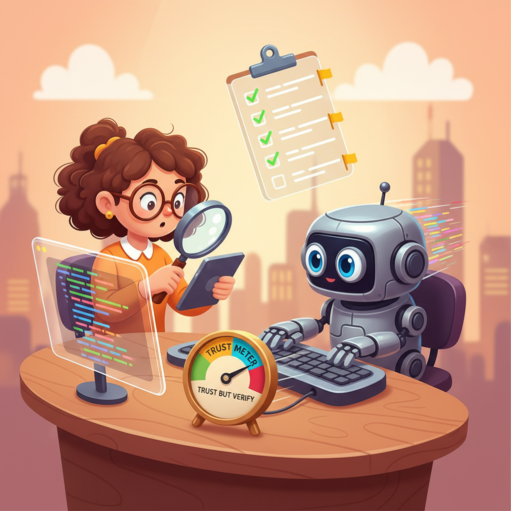

"The bottleneck in software is no longer typing code. It is knowing whether the code you just received is correct, safe, and aligned with the system you are building."
Adapted from "The Strange Future of AI-Written Software" (2025)

Prerequisites
This section builds on the observe-steer loop from Section 37.1 and the documentation as control surface concepts from Section 37.3. Familiarity with prompt engineering fundamentals (Chapter 11) and basic software testing practices is assumed.
AI coding assistants are reshaping the developer's job description. The core skill is shifting from syntactical code production to intent clarification and output evaluation. Tools like GitHub Copilot, Claude Code, Cursor, and Devin can generate substantial code from natural language descriptions, but each line they produce carries implicit assumptions about security, architecture, and business logic that no model fully understands. This section introduces a structured verification discipline, catalogs the types of AI coding assistants and their trust profiles, and examines the new risk of cognitive lock-in: a dependency that forms when teams rely on AI-generated code that nobody fully comprehends.
1. The Developer Role Shift Basic
For decades, the primary bottleneck in software development was code production. Developers spent most of their time translating mental models into syntax, looking up API signatures, and wiring components together. AI coding assistants have compressed that bottleneck dramatically. A function that once took thirty minutes to write now appears in seconds.
The bottleneck has not disappeared; it has moved. The new constraint is code evaluation: reading generated output, judging its correctness, assessing its security posture, and determining whether it fits the architectural patterns your team has established. This is a fundamentally different cognitive task. Writing code is a generative activity; evaluating code is an analytical one. Many developers are well-practiced at the former and under-practiced at the latter.
The role shift can be summarized in three transitions:
- From syntax producer to intent clarifier. Your value is no longer in knowing that Python's
dict.get()accepts a default argument. It is in articulating precisely what the system should do, what it must never do, and what constraints apply. The clearer your intent, the better the AI's output. This connects directly to the prompt engineering principles from Chapter 11: specificity, examples, and explicit constraints. - From builder to evaluator. You spend more time reading code than writing it. Code review, once a peer activity, becomes a constant solo practice as you review every block the AI produces.
- From implementer to architect. With implementation largely automated, the decisions that matter most are structural: which patterns to use, how components connect, where to draw boundaries. Architectural judgment becomes the primary differentiator between junior and senior developers.
Speed of generation without speed of evaluation creates an illusion of productivity. A developer who accepts AI-generated code without reading it may produce features faster in the short term, but accumulates hidden defects, security vulnerabilities, and architectural inconsistencies that compound over time. The truly productive developer is the one who can evaluate code as fast as the AI can generate it. Invest in your reading speed, your testing discipline, and your ability to spot patterns that do not belong.
2. Types of AI Coding Assistants Basic
Not all AI coding assistants operate the same way. They fall into three broad categories, each with a different trust profile and verification requirement.
| Category | Examples | How It Works | Trust Profile |
|---|---|---|---|
| Completion tools | GitHub Copilot (inline), Tabnine | Predicts the next few lines based on surrounding context. Operates at the statement or function level. | Low risk per suggestion (small scope), but high volume means errors accumulate. Easy to review inline. |
| Chat-based assistants | Claude, ChatGPT, Gemini | Generates code in response to conversational prompts. Can produce entire files or modules. Supports iterative refinement. | Medium risk. Larger output scope means more surface area for errors. Conversation context helps steer, but the developer must actively verify. |
| Agentic assistants | Claude Code, Cursor Agent, Devin, Windsurf | Autonomously executes multi-step tasks: reads files, writes code, runs tests, installs dependencies. Operates across the entire codebase. | Highest risk. The assistant makes decisions (file creation, dependency choices, architectural patterns) that the developer may not observe in real time. Requires the strongest verification discipline. |
The key principle is that trust requirements scale with autonomy. A completion tool that suggests a single line requires a glance. An agentic assistant that restructures your project directory requires a full audit. As you move up the autonomy ladder, the observe-steer loop from Section 37.1 becomes more important, not less.
Agentic assistants deserve special attention because they represent a qualitative shift. Unlike completion tools and chat assistants, agentic tools can take actions with side effects: creating files, modifying configurations, installing packages, and running commands. As discussed in Chapter 25 on specialized agents, any system that takes autonomous actions needs guardrails proportional to its scope of authority.
GitHub reported in 2024 that Copilot users accept roughly 30% of suggested completions. That means 70% of AI-generated code is rejected at the point of suggestion. For chat-based and agentic tools, acceptance rates vary more widely because the output is larger and the evaluation is more complex. The 30% figure is a healthy sign: it means most developers are exercising judgment rather than accepting blindly. The challenge with agentic tools is that the "accept or reject" moment is less discrete; the assistant may have already executed several steps before you see the result.
3. The Five-Step Verification Discipline Intermediate
Every block of AI-generated code should pass through a structured verification process before it earns your trust. The following five steps form a repeatable discipline that applies regardless of which assistant category you use.
Step 1: Read the Generated Code
This sounds obvious, yet it is the step most frequently skipped. When an AI produces 50 lines that "look right" and the tests pass, the temptation to move on is strong. Resist it. Read every function, every conditional, every edge case handler. You are looking for three things: (1) logic that does not match your intent, (2) assumptions the AI made that you did not specify, and (3) patterns that diverge from your codebase's conventions.
Step 2: Write or Generate Tests Before Trusting
If the generated code does not come with tests, write them before you accept the code. Better yet, ask the AI to generate tests, then review both the code and the tests together. A useful pattern is to write the tests first (specifying expected behavior), then ask the AI to produce the implementation. This test-first approach, borrowed from test-driven development, gives you a verification harness before the code even exists.
Step 3: Review for Security Issues
AI assistants are trained on vast corpora of open-source code, which includes plenty of insecure patterns. Common issues to watch for include: SQL injection via string concatenation, hardcoded secrets or API keys, use of deprecated cryptographic functions, missing input validation, overly permissive file or network access, and deserialization of untrusted data. Cross-reference with the safety and guardrail patterns from Chapter 32.
Step 4: Check for Architectural Fit
AI assistants do not know your codebase's conventions unless you tell them. Generated code may use a different ORM, a different error-handling pattern, a different logging framework, or a different directory structure than your project expects. Check that the generated code matches your patterns. If your project uses dependency injection, the AI should not be creating global singletons. If your project separates business logic from HTTP handlers, the AI should not be mixing them.
Step 5: Add to the Trust Record
Once code passes the first four checks, record the verification in your IEB (Section 37.3). A trust record entry includes: what was generated, what was verified, what tests cover it, and any caveats or limitations noted during review. Over time, the trust record builds a map of which parts of your codebase have been verified by a human and which have not.
You ask Claude Code to generate a REST endpoint for user registration. It produces 80 lines of code including input validation, password hashing, database insertion, and a JSON response. You read the code and notice it uses md5 for password hashing (Step 1, fail). You ask for bcrypt instead. The revised version looks correct. You generate tests covering valid registration, duplicate email, missing fields, and SQL injection attempts (Step 2). You review for security: the code uses parameterized queries (good), does not log the password (good), and sets appropriate HTTP status codes (Step 3, pass). You check architectural fit: it follows your project's repository pattern and uses your configured logger (Step 4, pass). You record in the trust record that the registration endpoint was AI-generated, reviewed, and covered by four tests (Step 5). Total time: 15 minutes for code that would have taken an hour to write manually.
4. A CI Check for AI-Generated Code Coverage Intermediate
The verification discipline described above works for individual developers, but teams need automated enforcement. The following script implements a pre-commit hook (or CI check) that flags AI-generated files lacking corresponding test coverage. It scans for a configurable marker comment that AI assistants can insert (or that your team policy requires in AI-generated files), then verifies that a matching test file exists.
#!/usr/bin/env python3
"""Pre-commit hook: flag AI-generated source files without test coverage.
Usage as a Git pre-commit hook:
1. Save this script as .git/hooks/pre-commit (or register via pre-commit framework).
2. Make it executable: chmod +x .git/hooks/pre-commit
3. Any staged file containing the AI_GENERATED marker that lacks a
corresponding test file will block the commit.
Marker convention:
Add '# AI_GENERATED' (Python) or '// AI_GENERATED' (JS/TS) as a comment
in the first 10 lines of any file produced by an AI coding assistant.
"""
import subprocess
import sys
from pathlib import Path
# ---------------------------------------------------------------------------
# Configuration
# ---------------------------------------------------------------------------
AI_MARKER = "AI_GENERATED"
SOURCE_EXTENSIONS = {".py", ".js", ".ts", ".jsx", ".tsx"}
TEST_PREFIXES = ("test_", "spec_")
TEST_SUFFIXES = ("_test", "_spec", ".test", ".spec")
MAX_SCAN_LINES = 10 # Only check the first N lines for the marker
def get_staged_files() -> list[Path]:
"""Return a list of staged file paths."""
result = subprocess.run(
["git", "diff", "--cached", "--name-only", "--diff-filter=ACM"],
capture_output=True, text=True, check=True,
)
return [Path(f) for f in result.stdout.strip().splitlines() if f]
def has_ai_marker(filepath: Path) -> bool:
"""Check whether the first MAX_SCAN_LINES lines contain the AI marker."""
try:
with open(filepath, encoding="utf-8") as fh:
for i, line in enumerate(fh):
if i >= MAX_SCAN_LINES:
break
if AI_MARKER in line:
return True
except (OSError, UnicodeDecodeError):
return False
return False
def find_test_file(source: Path) -> bool:
"""Heuristic: look for a test file that corresponds to the source file.
Checks common conventions:
- test_<name>.py / <name>_test.py (Python)
- <name>.test.ts / <name>.spec.ts (JS/TS)
- tests/test_<name>.py (tests/ subdirectory)
"""
stem = source.stem
parent = source.parent
ext = source.suffix
# Remove existing test prefixes/suffixes to get the base name
for prefix in TEST_PREFIXES:
if stem.startswith(prefix):
return True # This file IS a test
for suffix in TEST_SUFFIXES:
if stem.endswith(suffix):
return True # This file IS a test
# Search for matching test files
candidates = []
for prefix in TEST_PREFIXES:
candidates.append(parent / f"{prefix}{stem}{ext}")
for suffix in TEST_SUFFIXES:
candidates.append(parent / f"{stem}{suffix}{ext}")
# Also check a tests/ subdirectory
tests_dir = parent / "tests"
if tests_dir.is_dir():
for prefix in TEST_PREFIXES:
candidates.append(tests_dir / f"{prefix}{stem}{ext}")
for suffix in TEST_SUFFIXES:
candidates.append(tests_dir / f"{stem}{suffix}{ext}")
return any(c.exists() for c in candidates)
def main() -> int:
staged = get_staged_files()
violations: list[str] = []
for filepath in staged:
if filepath.suffix not in SOURCE_EXTENSIONS:
continue
if not filepath.exists():
continue
if not has_ai_marker(filepath):
continue
if not find_test_file(filepath):
violations.append(str(filepath))
if violations:
print("ERROR: AI-generated files missing test coverage:")
for v in violations:
print(f" {v}")
print()
print(f"Each file marked with '{AI_MARKER}' must have a")
print("corresponding test file. Either:")
print(" 1. Add tests (e.g., test_<filename>.py)")
print(" 2. Remove the AI_GENERATED marker if the file")
print(" has been fully reviewed and verified manually.")
return 1
if staged:
ai_count = sum(
1 for f in staged
if f.suffix in SOURCE_EXTENSIONS and f.exists() and has_ai_marker(f)
)
if ai_count:
print(f"OK: {ai_count} AI-generated file(s) have test coverage.")
return 0
if __name__ == "__main__":
sys.exit(main())AI_GENERATED marker in its first 10 lines must have a corresponding test file. This prevents AI-generated code from entering the codebase without at least a minimal test harness. Integrate it with the pre-commit framework or install it directly as .git/hooks/pre-commit.5. Cognitive Lock-in: The New Dependency Risk Intermediate
Vendor lock-in is a familiar concept: you become dependent on a specific provider's APIs, pricing, and ecosystem. AI coding assistants introduce a subtler form of dependency that we call cognitive lock-in. It occurs when AI writes code that works correctly but nobody on the team fully understands.
Cognitive lock-in differs from vendor lock-in in several important ways:
| Dimension | Vendor Lock-in | Cognitive Lock-in |
|---|---|---|
| What you depend on | A provider's API, SDK, or platform | The AI tool's ability to explain and maintain code it generated |
| When it becomes visible | When you try to switch providers | When something breaks and nobody can debug it without the AI |
| Mitigation | Abstraction layers, standard interfaces | Verification discipline, code comprehension, thorough documentation |
| Worst case | Expensive migration project | System becomes unmaintainable; must be rewritten |
Cognitive lock-in is particularly dangerous because it is invisible until a crisis. The code runs fine. The tests pass. The product ships. Then six months later, a bug surfaces in a module that nobody remembers reviewing. The original developer has moved on. The AI assistant that generated the code does not remember the session. The code uses an unfamiliar pattern that makes sense in isolation but does not match anything else in the codebase. Debugging takes three days instead of three hours.
The antidote is straightforward: never accept code you cannot explain. If the AI generates a solution using a technique you do not recognize, take the time to understand it before committing. If you cannot explain the code to a colleague without referencing the AI session, you do not understand it well enough.
Before committing any AI-generated code, ask yourself: "Could I debug this at 2 AM during an incident, without access to the AI assistant?" If the answer is no, you have two options: (1) spend time understanding the code now, or (2) ask the AI to rewrite it using patterns you already know. Option 2 may produce slightly less "clever" code, but cleverness you cannot maintain is a liability, not an asset.
6. When AI Code Helps vs. Hurts Intermediate
AI coding assistants are not equally useful across all development tasks. Their effectiveness depends on how well-defined the task is, how much domain-specific context is required, and how severe the consequences of subtle errors are.
| Task Category | AI Effectiveness | Why |
|---|---|---|
| Scaffolding and boilerplate | Excellent | High pattern regularity. Well-represented in training data. Errors are immediately visible. |
| Test generation | Very good | Tests have a predictable structure. The AI can generate many cases quickly. Human reviews for coverage gaps. |
| Data transformation scripts | Very good | Input/output pairs are easy to specify and verify. Errors show up immediately in the output data. |
| API integration code | Good (with caution) | AI knows common API patterns but may use outdated SDK versions or deprecated endpoints. Verify against current docs. |
| Critical business logic | Risky | Requires deep domain knowledge the AI does not have. Subtle errors in pricing, billing, or compliance logic can be costly. |
| Security-sensitive code | Dangerous without expert review | Cryptography, authentication flows, and access control require precision. A plausible-looking implementation may have critical flaws. See Chapter 32 on safety guardrails. |
| Novel algorithms | Unreliable | AI excels at recombining known patterns, not inventing new ones. If your problem requires a genuinely novel approach, AI-generated code is likely a poor starting point. |
The general principle: use AI for the mechanical parts and reserve human judgment for the consequential parts. Let the AI generate the CRUD endpoints, the test scaffolding, and the configuration files. Apply your own expertise to the pricing engine, the authentication flow, and the data pipeline that feeds your ML model.
7. Speed, Verification, and Technical Debt Intermediate
AI coding assistants offer a genuine speed advantage. Teams that integrate them effectively report completing tasks 30% to 55% faster than those that do not (Peng et al., 2023). But speed has a dual nature in software development.
Speed as competitive advantage. Teams executing faster observe-steer cycles (see Section 37.1) explore more solution possibilities in the same time frame. If your team can prototype three approaches in the time it takes a competitor to build one, you make better-informed decisions about which approach to pursue. This is the virtuous form of speed: more iterations, more evidence, better choices.
Speed as debt accumulator. Speed without verification creates a different outcome. Every AI-generated block that ships without review is a potential defect, a potential security vulnerability, a potential architectural inconsistency. These do not cause immediate pain; they accumulate quietly until a refactor, an audit, or an incident forces the team to confront them. At that point, the "time saved" by skipping verification is repaid with interest.
The resolution is not to slow down. It is to invest in verification infrastructure that keeps pace with generation speed. Automated test generation, CI checks like the pre-commit hook above, and structured code review processes allow teams to maintain speed while catching problems early. The goal is a verification pipeline that takes minutes, not hours, so that the observe-steer loop remains tight.
The real metric is not "lines of code per hour" but "verified features per sprint." A team that generates 10,000 lines of AI-produced code per week but reviews only half of it is slower in practice than a team that generates 5,000 lines and verifies all of them. The first team will spend future sprints debugging the unreviewed half. The second team moves forward with confidence. Track what ships to production with full test coverage, not what the AI generated.
Key Takeaways
- The developer role is shifting from code producer to code evaluator. The bottleneck is no longer writing code; it is knowing whether the generated code is correct, secure, and architecturally consistent. Invest in evaluation skills accordingly.
- Trust requirements scale with autonomy. Completion tools need a glance; chat assistants need a review; agentic assistants need a full audit. Match your verification effort to the assistant's scope of action.
- Follow the five-step verification discipline. Read the code, write tests, review for security, check architectural fit, and record your trust assessment. No exceptions for "simple" changes.
- Cognitive lock-in is the new dependency risk. Code that works but nobody understands creates a dependency on the AI tool for maintenance. Never accept code you cannot explain without the AI's help.
- Use AI for the mechanical; reserve human judgment for the consequential. Scaffolding, boilerplate, and test generation are excellent use cases. Critical business logic, security-sensitive code, and novel algorithms require expert human review.
- Speed is an advantage only when paired with verification. Fast observe-steer cycles let teams explore more possibilities. Fast generation without review creates technical debt that compounds silently.
What Comes Next
Section 37.5: From Prototype to MVP takes the verification discipline established here and applies it to the transition from a working prototype to a minimum viable product. You will learn how to decide which AI-generated components survive the prototype phase and which need to be rewritten with production-grade rigor.
Show Answer
Show Answer
Show Answer
Bibliography
Peng, S., Kalliamvakou, E., Cihon, P., et al. (2023). "The Impact of AI on Developer Productivity: Evidence from GitHub Copilot." arXiv:2302.06590
Perry, N., Srivastava, M., Kumar, D., et al. (2023). "Do Users Write More Insecure Code with AI Assistants?" arXiv:2211.03622
Ziegler, A., Kalliamvakou, E., Li, X. A., et al. (2024). "Measuring GitHub Copilot's Impact on Productivity." Communications of the ACM, 67(3), 54-63. doi:10.1145/3633453
Liang, J., Yang, Y., Chen, C., et al. (2024). "Large Language Models for Software Engineering: A Systematic Literature Review." arXiv:2308.10620